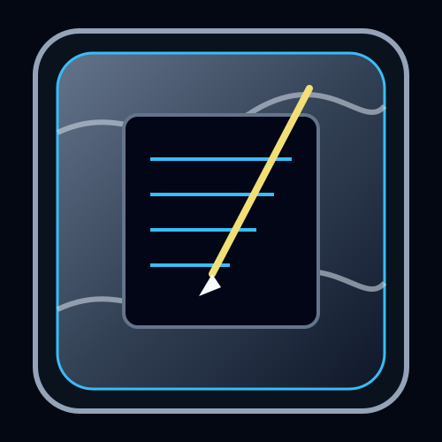
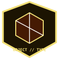

Name the destination
Write a real person, camp, shelter, or home on a physical card before entry.

drifting 안개

Place-Phantasmal“The fog does not tell a traveler they are lost. It removes the part of them that believed a destination existed.”
Write a real person, camp, shelter, or home on a physical card before entry.
Carry rope or markers, a Memory Anchor, and spoken route count; digital maps alone are insufficient.
After three failed direction changes, establish physical contact. Never send a lone pursuer into Total Obscuration.
Name the lost people beneath the fog and keep moving toward a real anchor. Force only creates a Cold Current.
Brume is a bank of bone-white sorrow mist formed from nomads who wandered until the idea of return dissolved. It follows Desolate Han-flow rather than weather and attacks navigation before the body: distance becomes unreliable, familiar routes repeat, and exposed personnel stop believing continued movement has value. A map alone cannot provide an exit. The team must name a real destination, maintain a physical route anchor, and continue together.
The fog is cold, damp, and faintly sweet with the smell of old flowers. There is no central body to strike—only mist and muffled weeping. Ground softens inside it, walls and air thicken, and the same landmark may seem to occupy several directions. It moves at roughly walking speed. Wind does not disperse it, and attempts to blast a clear lane create a Cold Current down the artificial path.
Desolate nomads crossed the wilderness generation after generation until the city became a feature of the horizon rather than a destination. Temporary camps became the only permanence. Isolation, exhaustion, and rootlessness erased the belief that anyone would come or that travel could end. Their collective despair condensed into a Place-Phantasmal Echo that still drifts as they did.
No direct response. Mourning may be performed after exit for the named loss beneath the route.
No direct response. Force thickens or redirects the fog and is prohibited.
Reveals old route lines and silhouettes of lost nomads.
Tests whether a team continues moving without abandoning one another.
First Wisp applies a Void mark.
Thickening increases around that person.
Cold Current travels down the attempted route.
Total Obscuration closes line of sight.
Fog World spreads with three-turn area erosion.
A patrol returned from fog with the same people but no agreement about where they had been.
Brume follows Han-flow and removes confidence that movement has a purpose.
Route data is not yet full behavioral understanding.
The original nomad community remains unconfirmed without survivors or archive evidence.
Mastery requires entering with a named destination and returning with proof that the route remained real.


One bearer carries all three pieces and a physical card naming a real destination. A pale route line can guide up to five people through Brume. If the destination is false, deliberately fabricated, or abandoned, the line returns to the starting point and the Lantern remains dark for seven days.
Brume mourns a destination rather than one lost home. Its victims can keep walking long after hope of arrival has disappeared. The entity therefore does not need to build a false wall; it only repeats enough uncertainty that a traveler supplies the conclusion that no road matters. A thin route opens when someone remembers that the silhouettes inside were people who expected, once, to reach another person.
| Related record | Observed relationship |
|---|---|
| The Hollow Choir | Sings near the fog as a chorus of recognition. |
| The Maw | Resonates through ancient sorrow. |
| The Kind Healer | Cannot enter the densest region. |
| The Scar Walker | Patrols the edge and redirects travelers. |
| Border Watch | Provides route teams and field anchors. |